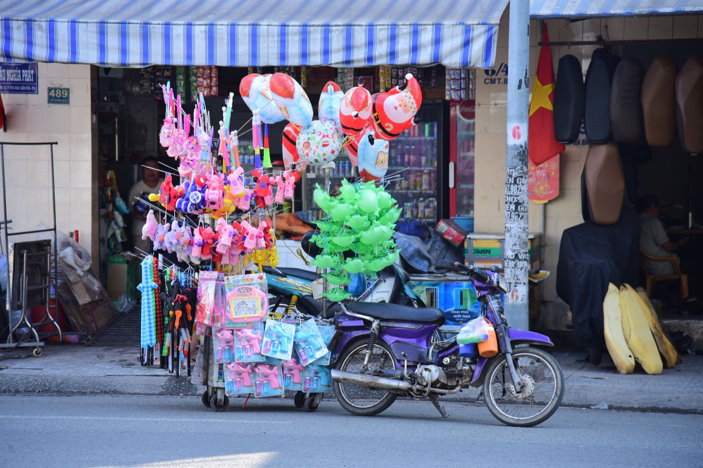
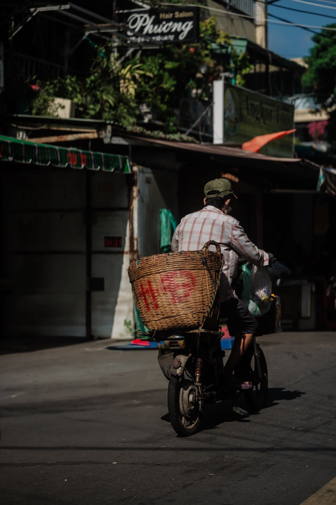

Как ездить на байке по узким улицам и рынкам

В переулках и возле рынков дорожное пространство постоянно меняется: пешеход выходит из-за прилавка, байк начинает движение без запаса, тележка перекрывает половину проезда. Здесь важна не ловкость между препятствиями, а низкая скорость и готовность полностью остановиться.
Скорость должна соответствовать обзору
Едь так, чтобы остановиться в пределах видимого свободного участка. Если угол дома, фургон или ряд припаркованных байков закрывает обзор, заранее сбрось газ. Не ускоряйся только потому, что перед тобой на секунду появился пустой коридор.
Держи пространство вокруг байка
Не прижимайся к припаркованным машинам: дверь может открыться, а человек — выйти между ними. Оставляй запас от прилавков, животных и детей. При встречном разъезде заранее выбери широкое место и при необходимости остановись, вместо попытки протиснуться одновременно.

Как пользоваться сигналом
Короткий спокойный сигнал помогает обозначить себя перед закрытым поворотом или рядом с человеком, который не видит байк. Он не даёт преимущества и не заменяет торможение. Длинный громкий сигнал часто пугает пешехода и делает его движение менее предсказуемым.
Газ и тормоз на малой скорости
Держи кисти расслабленными, смотри дальше переднего колеса и управляй плавно. Не крути резко газ при вывернутом руле. Один-два пальца могут быть готовы к торможению, но не поджимай ручку постоянно. Перед очень тесным участком лучше остановиться и оценить ширину.
Парковка у рынка
Ищи официальную стоянку, парковщика или ряд, который явно контролируется. Не перекрывай вход, проход, пандус и выезд других байков. Запомни сектор или сфотографируй место: сотрудники часто переставляют технику плотнее. Ценные вещи и документы не оставляй под сиденьем.
Что особенно опасно
- мокрая плитка, рыба, овощные отходы и песок под колёсами;
- зонты, тенты и груз, выступающий на проезжую часть;
- байки, выезжающие задом без полного обзора;
- дети и животные между рядами;
- поворот в узкий проход без возможности увидеть встречный транспорт.
Если стало слишком тесно
Остановись в безопасном месте, заглуши двигатель и пройди нужный участок пешком. Навигатор иногда ведёт через переулок, который формально существует, но неудобен для движения. Разворот и другой маршрут лучше, чем риск повредить байк или задеть человека.
Короткий вывод
Узкая улица требует низкой скорости, широкого взгляда и готовности уступить. Не соревнуйся за каждый промежуток. Дополнительно прочитай материал про парковку в Нячанге и инструкцию по настройке зеркал.